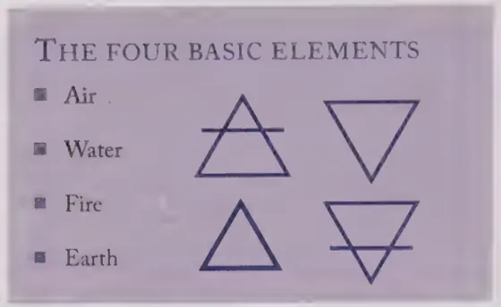
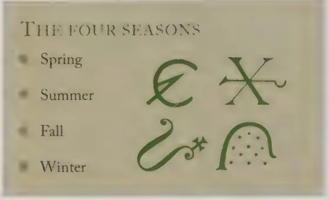
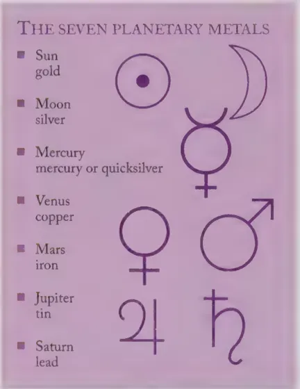
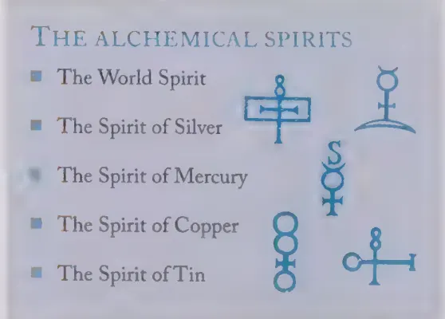

Symbol Grimoire
Alchemy
Alchemy is an ancient art at the heart of which lies the manufacture of a mysterious substance called the Philosopher's Stone, the legendary object said to transform base metals into gold.
However, the gold in this instance symbolizes not just the valuable metal, but enlightenment and eternal life. Alchemists are concerned with their own spiritual and personal development as well as the pursuit of the seemingly unattainable goal.
Neitan and Waitan
The Chinese differentiate between two kinds of alchemy: neitan (the alchemy of spiritual transformation) and waitan (the straightforward "lead-into-gold" type).
The motto of the Alchemists is Solve et Coagula, meaning "Solution and Coagulation."
Secrecy and Symbolism
The work of the early Alchemists was necessarily secretive and clandestine. Its secrets are still held within a rich encrustation of symbols, pictures, oblique references, double meanings, and riddles. Alchemical symbolism features animals, birds, colors, and parables, as well as archetypal symbols such as the Cosmic Egg.
The Emerald Tablet
The key tenets of alchemy are encompassed in the Smaragdina Tablet, or the Emerald Tablet, said to have been found by Alexander the Great in the tomb of Hermes Trismegistus (Hermes the Thrice Great), who is the founder of all things alchemical.
The Alchemical Tradition
The Alchemical Tradition exists or existed in Ancient Egypt, China, and India, but its most recent incarnation was in medieval Europe. Notable practitioners include John Dee (astrologer to Queen Elizabeth I), Paracelsus, Albertus Magnus, Christian Rosenkreuz, Nicholas Flamel, and Isaac Newton.
Alchemical Symbols
Although some alchemical symbols occasionally varied between practitioners, there is a core set of commonly used signs. Many of these symbols have survived to the present day, and the meanings of the simpler ones are so universal that they extend well beyond the reaches of this one system.



